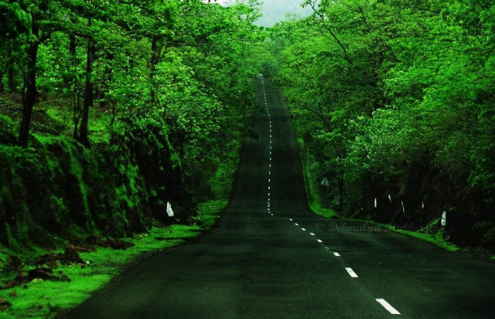
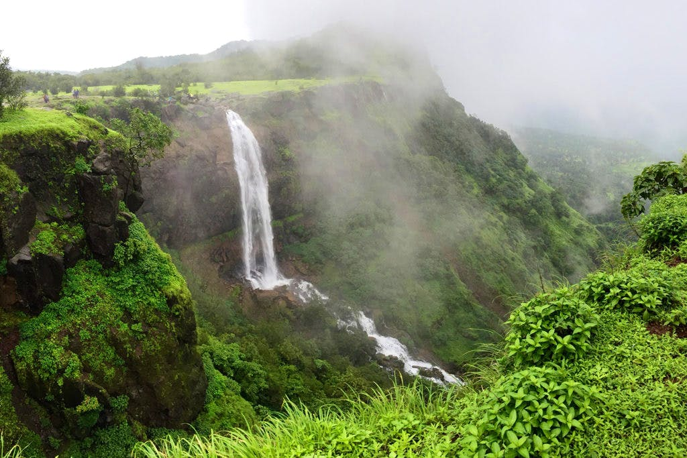
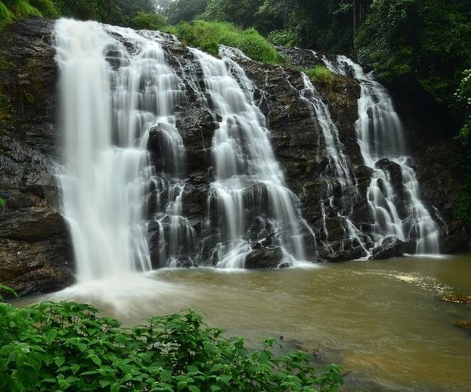
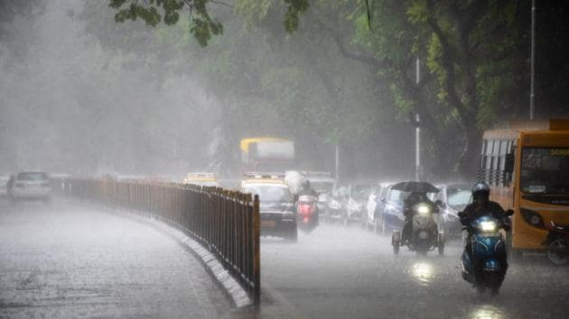

Monsoon in Pune
The monsoon in Pune is one of the most beautiful seasons enhancing it natural beauty to the fullest. During the Pune monsoons, the valleys and ghats offer amazing perspectives of towering hills, landscapes and enthralling journeying courses.

Waterfall in pune
Situated amidst the lush green hills of Sahyadri, Kune Falls is the 14th highest waterfall in India and perhaps one of the most beautiful waterfalls near Pune.

How are waterfalls formed
Often, waterfalls form as streams flow from soft rock to hard rock. This happens both laterally (as a stream flows across the earth) and vertically (as the stream drops in a waterfall). In both cases, the soft rock erodes, leaving a hard ledge over which the stream falls.

Rain in Pune
Pune has dry periods in January, February, March, April, May, November and December. On average, July is the most rainy with 12 days of rain/snow. On average, February is the driest month with 0 rainy days. The average annual amount of rainy days is: 51.
